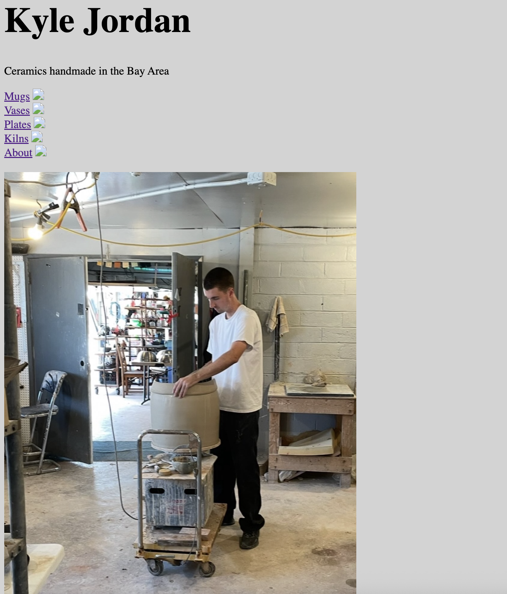
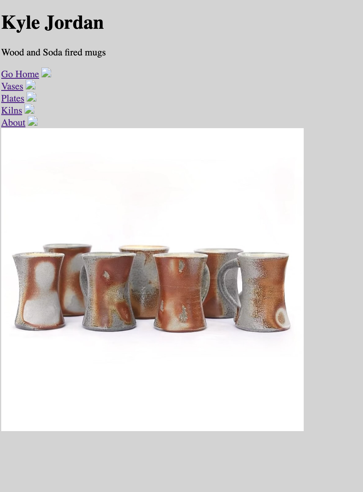
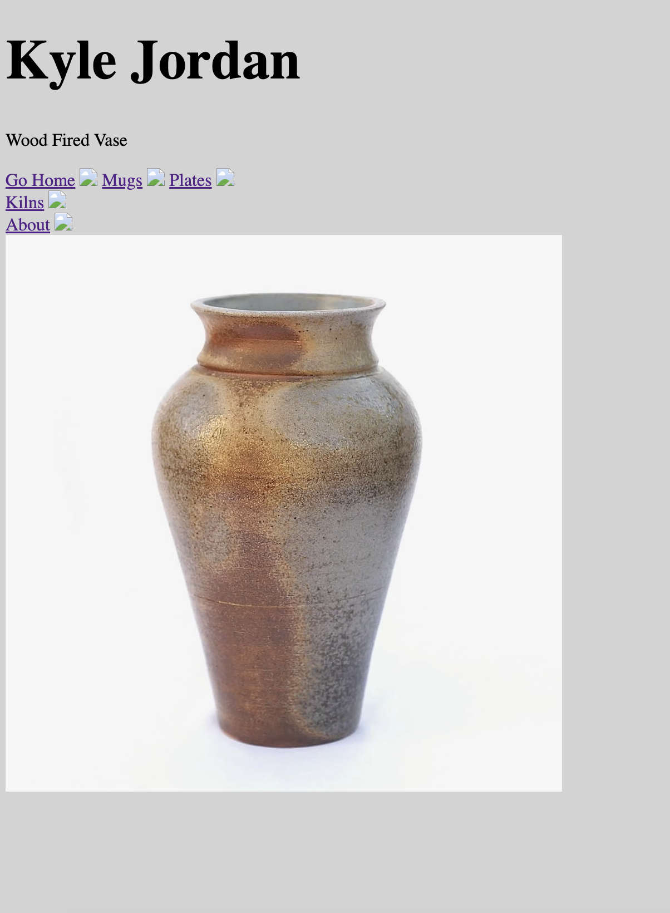
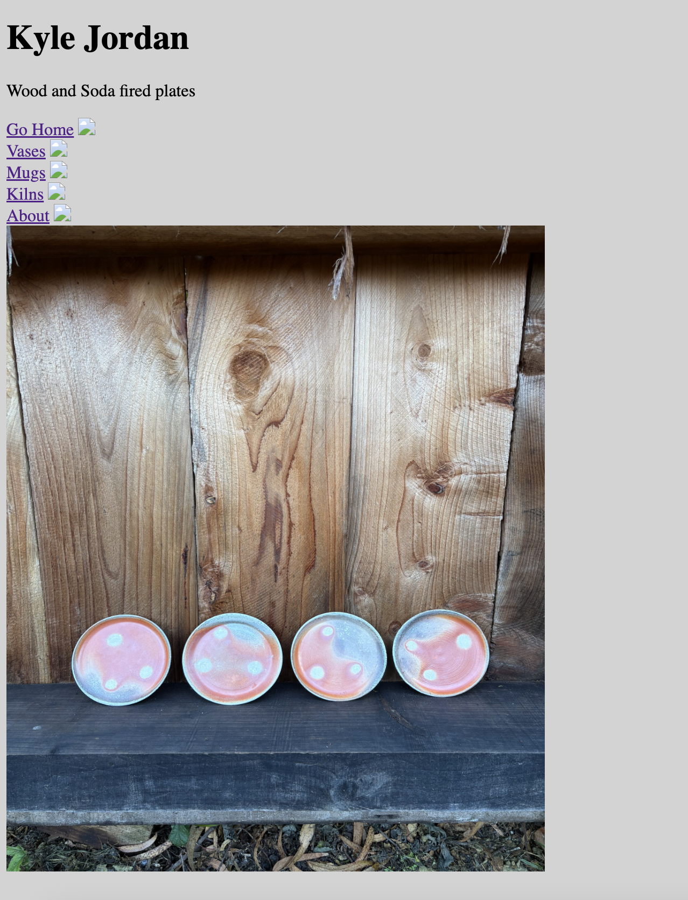
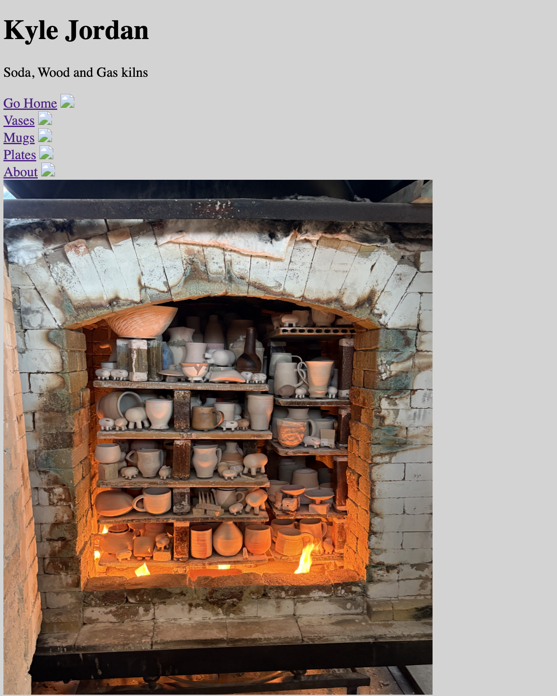
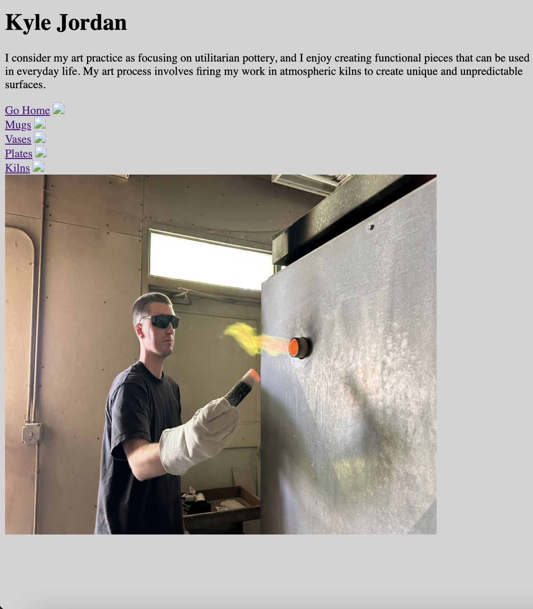

My project is a personal archive of the different shapes I like to make on the pottery wheel and the types of firings my pots go through like soda, wood, and gas firing. I wanted to show the viewers the different possibilities in ceramics and how each firing process gives a pot its own unique look. The navigation on my site is simple and easy to follow, with links to different types of pots, kilns, and a short description about me. I wanted viewers to explore my work and get a better idea of my ceramic practice. The links make it easy to move between categories and see the different forms and firing techniques I experiment with.